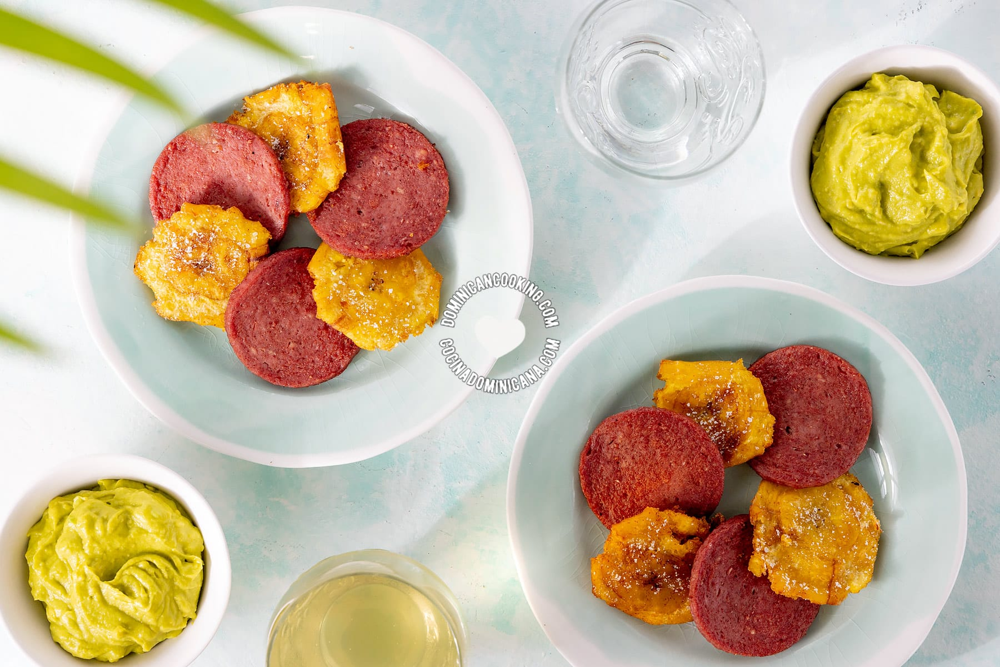

Home
Frito con Salami

Description
Este sencillo plato es un capricho que nos permitimos de vez en cuando, por lo que lo disfrutamos mucho cuando nos lo sirven.
No hay muchas variantes de este plato, aunque supongo que algunos preferirán el salami más fino y crujiente, o más grueso y blando. Puedes probar ambos y ver cuál te gusta más.
¿Lo preparas en casa? ¿Tienes algún truco o consejo? Cuéntanos en los comentarios si nos hemos olvidado de alguno.
¡Buen provecho !
Ingredients
- Para hacer salami frito
- ▢1 libra de salami dominicano
- ▢1 taza de aceite para freír
- Para hacer tostones (fritos verdes)
- ▢2 plátanos (verdes, sin madurar)
- ▢½ taza de aceite vegetal
- ▢1 cucharada de sal (o más, al gusto )
- Aderezo
- ▢1 tomate , picado
- ▢4 ramitas de perejil
- ▢1 diente de ajo
- ▢¼ cucharadita de pimienta (recién molida o recién molida)
- ▢1 cucharada de aceite de oliva
Steps
- Freir el salami
- Pelar los platanos
- Preparar fritos verdes
- Preparar salsa para mojar (optional)